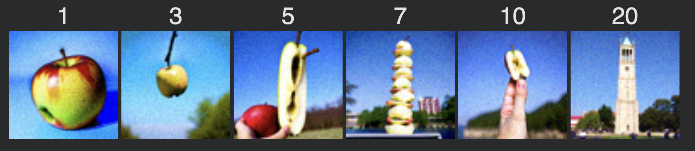
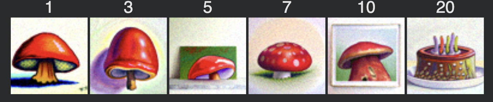
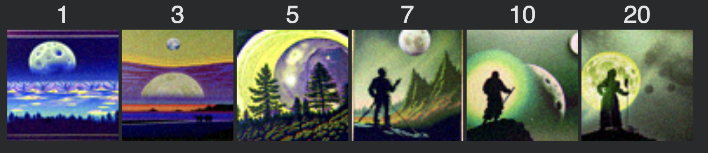
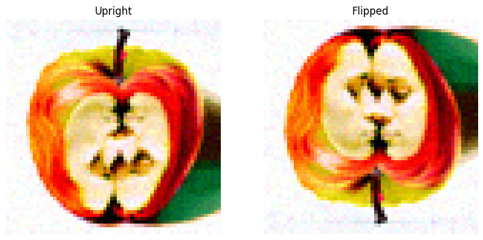
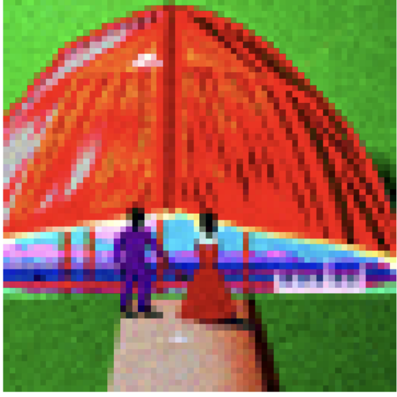

Below are the prompts I came up with for the Deepfloyd diffusion model: a high quality picture an oil painting of UC Berkeley's campanile a photo of the golden gate bridge a photo of an octopus making coffee a photo of half eaten apple a photo of a couple facing each other an oil painting of a red lamp an oil painting of a red mushroom a lithograph of the moon a lithograph of the sun a high quality photo a cute dog a cute cat
I used the seed of 180 and set num_inferences to 20 to get the images below:
Changing the num_references to 50:
Then I tried changing the num_inferences to 100 and got the results below. It seems that increasing the num_inferences makes the images follow more of the prompt, as the octopus is actually making coffee instead of holding it. However it also seems that the images are more "weird" as the colors areoveraturated and the octopus is simplified.
I implemented the forward diffusion process using the formula:
$$ x_t = \sqrt{\bar\alpha_t} x_0 + \sqrt{1 - \bar\alpha_t}\,\epsilon $$
with \(\bar\alpha_t\) drawn from stage_1.scheduler.alphas_cumprod. Applying this function to the Campanile image at \(t = 250, 500, 750\) produced progressively noisier examples that aligned with the expected degradation profile.
I used Gaussian blur as a baseline denoiser, applying kernel sizes of 5, 7, and 11 for timesteps 250, 500, and 750 respectively. While the blur reduced coarse noise, it failed to recover fine structural detail and demonstrated the limitations of classical restoration approaches under high noise.
I performed one-step denoising using the Stage I DeepFloyd UNet by predicting \(\epsilon_\theta(x_t, t)\) and computing \(\hat{x}_0\) via: $$ \hat{x}_0 = \frac{x_t - \sqrt{1-\bar\alpha_t}\epsilon_\theta}{\sqrt{\bar\alpha_t}} $$ The method recovered global structure effectively at low noise levels but produced grainy outputs for larger \(t\), reflecting the challenges of reversing diffusion in a single step.
I implemented a full reverse-diffusion loop using strided timesteps from 990 down to 0 with stride 30, computing posterior means and adding learned variance at each iteration. This iterative approach substantially improved reconstruction quality relative to one-step denoising, producing smoother textures and more stable geometry.
Using iterative denoising from pure Gaussian noise, I generated unconditional samples conditioned only on the empty prompt embedding. The outputs encoded generic photographic structure but lacked strong semantic specificity, illustrating the model’s reliance on text conditioning for detailed synthesis.
I incorporated CFG by computing both conditional and unconditional noise predictions and combining them as: $$ \epsilon_{final} = \epsilon_u + \gamma (\epsilon_c - \epsilon_u) $$ with \(\gamma = 7\). Introducing CFG meaningfully strengthened semantic alignment and sharpness across the sampling trajectory and served as the standard mechanism for all downstream generative and editing tasks.
I implemented SDEdit by adding forward noise to a clean image up to a chosen starting index \(i_{start}\) and then applying guided iterative denoising from that timestep. Experiments across indices \([1, 3, 5, 7, 10, 20]\) showed a controlled transition from light stylistic modification to substantial reinterpretation, and this behavior generalized consistently across photographs and hand-drawn sketches.
Handdrawn:
Web Image:
I implemented inpainting by adding a mask into the diffusion loop and re-injecting noised ground-truth pixels outside the masked region after each denoising step. This approach enabled edits such as replacing the Campanile with a ballon
I extended the SDEdit pipeline by swapping the prompt embedding to steer the reconstruction towards another.
From "a photo of half eaten apple" to the campanile
From "an oil painting of a red mushroom" to the cake
From "a lithograph of the moon" to the witch
I created visual anagrams by averaging noise estimates from two distinct prompts—one applied to the upright image, and the other applied to its 180°-rotated counterpart, flipped back before combining. This yielded hybrid outputs that resemble one prompt in the upright orientation and a different prompt when rotated.
"a photo of half eaten apple" and "a photo of a couple facing each other"
"a cute dog" and "a cute cat"

I generated hybrid images by decomposing each prompt’s noise estimate into low- and high-frequency components using Gaussian low-pass filtering and recombining them as: $$ \epsilon_{final} = \epsilon_{low} + \epsilon_{high} $$
"a cute dog" and "a cute cat"

"an oil painting of a red mushroom" and "a photo of a couple facing each other"
I implemented a UNet with downsampling and upsampling blocks, skip connections, and standard operations (Conv2d, ConvTranspose2d, AvgPool2d, BatchNorm, GELU). The hidden channel dimension was set to D = 128. All operations follow the architecture below:
Here is a visualization of the different noising processes over various σ:
I trained the UNet as a single-step denoiser on the MNIST dataset, where the objective is to recover a clean image \(x\) from a noisy observation \(z = x + \sigma \varepsilon\). During training, the model learns to directly predict the clean image given the noisy input. I trained for five epochs with a batch size of 256, a hidden dimension of 128, and the Adam optimizer using a learning rate of \(10^{-4}\). The visualization demonstrates that the denoising performance improves steadily over training. By epoch 5, the model is able to generate coherent and recognizable digit structures.
I applied Gaussian noise ranging from \(\sigma = 0.0\) to \(\sigma = 1.0\) to test images. The visualization demonstrates that the model performs reasonably well across a range of noise intensities it hasn’t seen before. Although as the noise increases to 1, reconstructions lose cleanliness but still maintain a recognizable form.
I trained the UNet to map pure Gaussian noise directly to clean MNIST images using the same architecture, optimizer, and hyperparameters as in the standard denoising setup. In this training, the input consists of random noise \(z \sim \mathcal{N}(0, \sigma^2)\) with \(\sigma = 0.5\), and the target is the corresponding clean digit image.
I repeated the training procedure from before for five epochs, replacing noisy images with pure Gaussian noise as input. Visualizations after one and five epochs show that the model fails to produce distinct digit shapes. Instead, the outputs resemble blurred averages of multiple digits. With an MSE loss, the model learns to predict the point that minimizes the sum of squared distances to all training samples. As a result, the model converges to the dataset’s average image, which reflects overlapping MNIST digit structures and produces the observed almost identical blurred image.
without scheduler